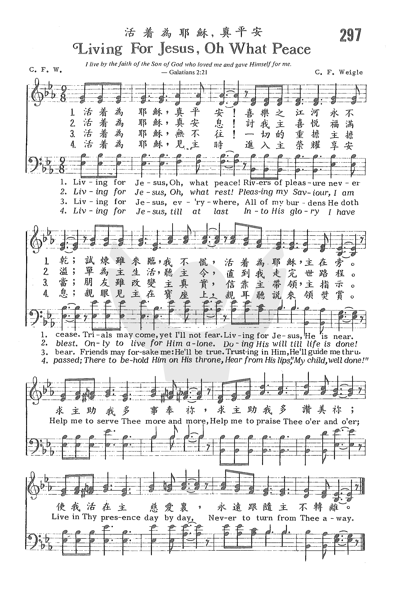

|
|
|
|
1 Living for Jesus, oh, what peace! Refrain 2 Living for Jesus, oh, what rest! 3 Living for Jesus, ev'rywhere, 4 Living for Jesus, till at last |
297 活著為耶穌,真平安 |
|
https://www.zanmeishige.com/tab/25665.html?songbook=1&index=297

|
|
|
|
|

活著為耶穌,真平安 LIVING FOR JESUS OH WHAT PEACE # 297 https://youtu.be/5S8y5VIpbsE -
https://youtu.be/7mTgjuiSK0A -
https://youtu.be/gor0pS9SQ4Q
1237
Living For Jesus Oh What Peace 活着为耶稣，真平安
| Text: | Living for Jesus |
| Author: | C. F. W. |
| Tune: | [Living for Jesus, oh, what peace] |
| Composer: | C. F. Weigle |
| Short Name: | Charles F. Weigle |
| Full Name: | Weigle, Charles F. (Charles Frederick), 1871-1966 |
| Birth Year: | 1871 |
| Death Year: | 1966 |
Tune Information
| Title: | [Living for Jesus, O what peace] |
| Composer: | Charles F. Weigle |
| Incipit: | 33333 44422 22233 |
| Key: | E♭ Major |
| Copyright: | Public Domain |
活著為耶穌 Living for Jesus
活著為耶穌，真平安，喜樂之江河永不乾，
試煉雖來臨，我不慌，活著為耶穌，祂在旁。
活著為耶穌，得安息，討我主喜悅，福滿溢，
單為主生活，聽主命，直到我走完世路程。
活著在何處，都為主，我一切重擔，主背負，
友縱背棄我，主忠誠，只要信靠主，祂引領。
活著為耶穌，有盼望，將來必得見榮耀王，
見主在寶座，心歡喜，聽主說： 『忠僕，得賞賜。』
副 歌
求主助我多事奉祢，求主助我多讚美祢，
使我活在主慈愛�堙A永遠跟隨主不轉離。
這是筆者最心愛的詩歌之一。 第一節告訴我們，活著為耶穌，有平安和喜樂，雖有試煉，因主在旁而不慌。 副歌更是令人百唱不厭，
另有一聖詩「奉獻身心為主」英文歌名也是Living for Jesus是戚曉睦（Thomas O. Chisholm 見 p. 42）作詞，陸敦 (Harold C. Lowdon)譜曲。其歌詞如下：
奉獻我身心為主作工作，
聽從主命令，得我主喜悅，
甘願背苦架，跟隨我救主，
我一生一世是為主而活。
無論何境遇，總為主作工，
盡各樣本分，使主名得榮，
倘或有苦難，我情願忍受，
為主名盡忠，得永遠生命。
副
歌
基督耶穌我救主，我心奉獻給祢，
因祢在十架上，為贖我罪釘死，
我要祢做我救主，來住在我心�堙A
我一生一世到永遠，要忠心服事祢。
這二首詩歌的含意略有不同。後者是根據
http://www.mbcsfv.org/chinese/library/hymncampanions/072.html
Living for Jesus, O What Peace
Words: Charles Frederick Weigle (b. Nov. 20, 1871; d. Dec. 3, 1966
Music: Charles Frederick Weigle
Links:
Wordwise Hymns (Charles Weigle)
The Cyber Hymnal
Hymnary.org
Note: Mr. Weigle was a trained musician and he wrote over a thousand songs, He
was also a gospel singer, and later became an evangelist, a preacher of the
gospel. Living for Jesus, O What Peace (not to be confused with Living for
Jesus, by Thomas Chisholm) is a lovely song, with a message that becomes all the
richer when you learn about the man who wrote it. You can hear a beautiful
rendition of it here on YouTube.
Over the years, television quiz shows have asked all kinds of questions.
Jeopardy has invented a twist on this: they give the answer, and ask what the
question should be. In either case, knowledge is tested, and contestants can
often win a considerable amount of money from their depth of knowledge of
various subjects.
But there’s a question I’ve never heard asked. In decades of following game
shows, the question has never come up. Answering it can be challenging, and
perhaps make us a little uncomfortable. The question is: What are you living
for? The answer has to do with things such as our goals, our values and purpose
in life.
Perhaps some will respond, “I haven’t really thought much about that.” If so, it
may imply a life that is carelessly drifting, or basically directionless. But if
we don’t have an understanding of what something is for–a plumb bob, a
stethoscope, a life–how can we use it effectively? And if we don’t know where
we’re going, it begs the question where will we end up? Our life’s purpose
should become a kind of test of everything we do, and everything that happens to
us. Will this forward my purpose? Or hinder it?
An honest and perceptive answer to the question can be sobering. Many responses
will indicate largely self-centred goals. Career advancement, money and
possessions, prestige and the approval of others, pleasure–which may be focused
on things like alcohol and drugs, or sex, or some kind of all-consuming hobby.
Even living for one’s family can be rather selfish, if looked at in terms of how
they can benefit and satisfy us.
There can be another problem with the options mentioned, a more serious one.
That they are not only focused on pleasing ourselves, but are time bound. Like
the rich farmer in Jesus’ parable (Lk. 12:16-21), the person may plan to “pull
down [his] barns and build greater…[then] eat, drink, and be merry,” with no
thought of eternity. Instead, the Lord counsels us, “Lay up for yourselves
treasures in heaven, where neither moth nor rust destroys and where thieves do
not break in and steal” (Matt. 6:20).
Earthly treasures will all be left behind (Ps. 49:17; I Tim. 6:7). How then can
we lay up treasures in heaven? The answer is found in a Christ-centred life.
First, to put our faith in Christ as our only Saviour from sin. Then, to live a
life in fellowship with Him, praise of Him, obedience to Him, and service for
Him. The latter involves using our gifts and opportunities to bless others for
Jesus’ sake, rather than seeking personal gain.
Phrased in the well known couplet by missionary C. T. Studd:
Only one life, ‘twill soon be past,
Only what’s done for Christ will last.
Paul put it even more succinctly: “To me, to live is Christ, and to die is gain”
(Phil. 1:21). And if to live is Christ, to die can only be gain. That’s true for
each one of us.
It’s the conclusion reached by evangelist and gospel song writer Charles Weigle,
and it’s beautifully expressed in his song, Living for Jesus, O What Peace! But
we need to ask what he meant by that.
Was he suggesting the Christian life is a peaceful life, with no pain, no
trials? No. In fact, Mr. Weigle struggled financially. And his wife,
dissatisfied with her inability to have the things of this life, packed up and
left him, taking their young daughter with her. Five years later, she died in a
far off city, ruined by the pleasures of sin.
There are hints in the song that the author’s life had its troubles. “Trials may
come” (stanza 1); “all of my burden…friends may forsake me” (stanza 3). No, the
“peace” Weigle’s song speaks of doesn’t depend on the comforts of this world,
but in the knowledge that we are investing our lives for Christ. It is a joy to
serve Him, and know our service counts for something–and that everlasting joy
and blessing await us up ahead.
CH-1) Living for Jesus–O what peace!
Rivers of pleasure never cease.
Trials may come, yet I’ll not fear.
Living for Jesus, He is near.
Help me to serve Thee more and more.
Help me to praise Thee o’er and o’er;
Live in Thy presence day by day,
Never to turn from Thee away.
CH-2) Living for Jesus–O what rest!
Pleasing my Saviour, I am blest.
Only to live for Him alone,
Doing His will till life is done!
CH-3) Living for Jesus everywhere,
All of my burden He doth bear.
Friends may forsake me; He’ll be true.
Trusting in Him, He’ll guide me through.
CH-4) Living for Jesus till at last
Into His glory I have passed;
There to behold Him on His throne,
Hear from His lips, “My child, well done!”
Questions:
1) What does “living for Jesus” mean to you personally?
2) How has this life purpose been a blessing to you?
Links:
Wordwise Hymns (Charles Weigle)
The Cyber Hymnal
Hymnary.org
https://wordwisehymns.com/2018/11/19/living-for-jesus-o-what-peace/